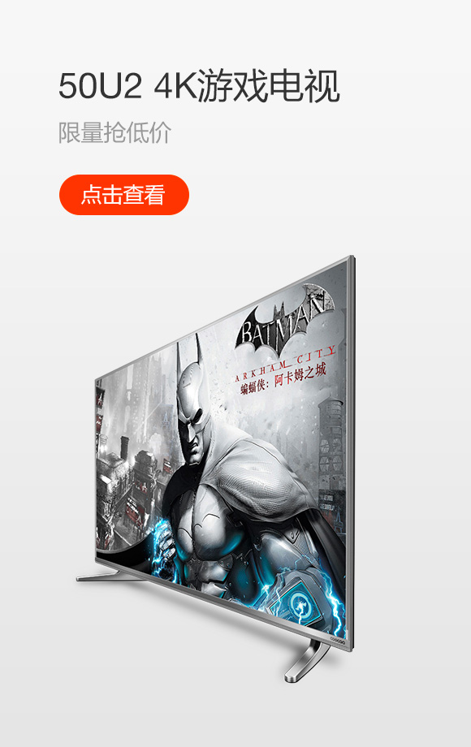

<div class="slideNav">
			    <div class="wrap3">
				<!--<a href="#" target="_blank" class="televisition">酷开电视&nbsp;&nbsp;&gt;-->
				   <div class="kukaitelevisition">
				   <dl>
				     <dt>爆款推荐</dt>
					 <dd><a href="#"target="_blank" >游戏电视 50U2</a></dd>
					 <dd><a href="#" target="_blank">合体电视 55A2</a></dd>
					 <dd><a href="#" target="_blank">冠军芯 KX55</a></dd>
					 <dd><a href="#" target="_blank">青年小K 43K2</a></dd>
					 <dd><a href="#" target="_blank">青年小K 43K2</a></dd>
					 <dd><a href="#" target="_blank">小企鹅K32</a></dd>
				   </dl>
				   <dl>
				     <dt>屏幕尺寸</dt>
					 <dd><a href="#" target="_blank">65英寸</a></dd>
					 <dd><a href="#" target="_blank">60英寸</a></dd>
					 <dd><a href="#" target="_blank">55英寸</a></dd>
					 <dd><a href="#" target="_blank">49-50英寸</a></dd>
					 <dd><a href="#" target="_blank">40-43英寸</a></dd>
					 <dd><a href="#" target="_blank">32英寸及以下</a> </dd>
				   </dl>
				   <dl>
				      <dt>电视类型</dt>
				      <dd><a href="#" target="_blank">4K超高清</a></dd>
					  <dd><a href="#" target="_blank">智能全高清</a></dd>
				   </dl>
				   <dl>
				     <dt>电视系列</dt>
					 <dd><a href="#" target="_blank">T系列 艺术电视</a></dd>
					 <dd><a href="#" target="_blank">A系列 明星旗舰</a></dd>
					 <dd><a href="#" target="_blank">N系列 游戏电视</a></dd>
					 <dd><a href="#" target="_blank">U系列 超高清</a></dd>
					 <dd><a href="#" target="_blank">K系列 全高清</a></dd>
				   </dl>
				</div>
				<div class="kukaitv"></div>
				
			   </div>
			
				<a href="#" target="_blank" class="accessories">电视配件&nbsp;&nbsp;&gt;</a>
				<a href="#" target="_blank" class="hardware">智能硬件&nbsp;&nbsp;&gt;</a>
				<a href="#" target="_blank" class="VR">VR&nbsp;&nbsp;&nbsp;&nbsp;&nbsp;&gt;</a>
			    
		  </div>
	     </div>
		</div>